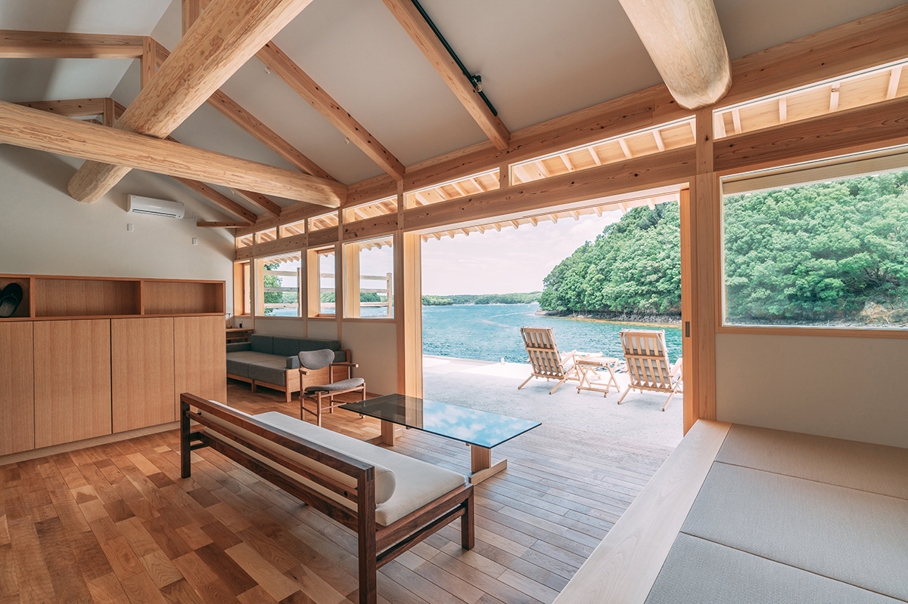
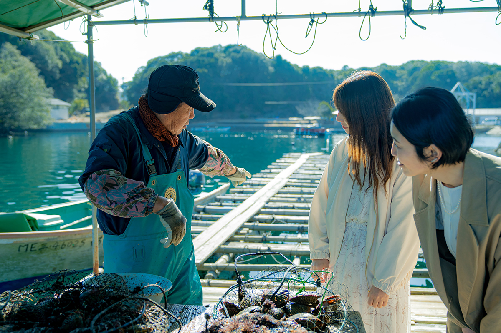
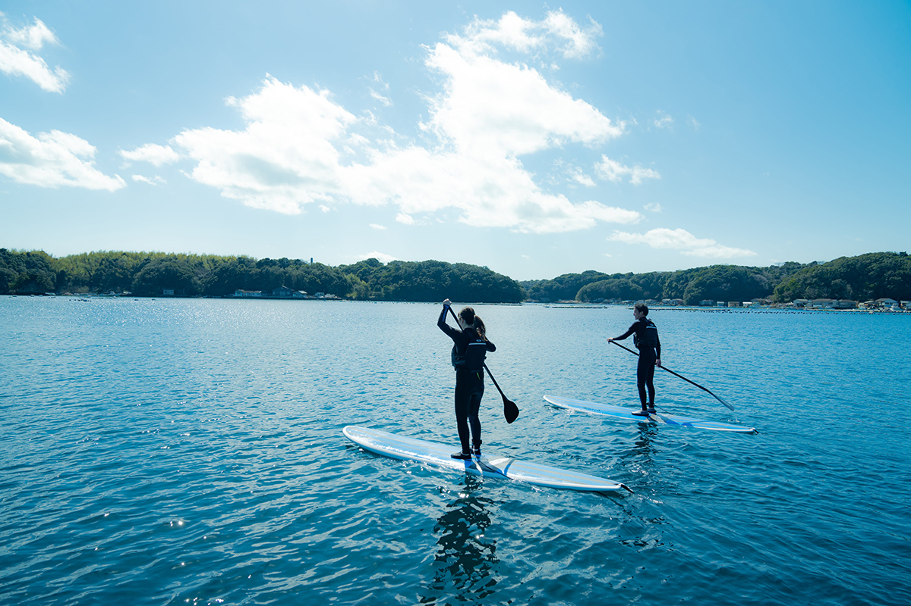

Префектура Миэ · Сима · где остановиться
COVA KAKUDA: виллы над заливом Аго на месте старой жемчужной фермы

На берегу залива Аго, где когда-то выращивали жемчуг, в 2023 году открылись виллы COVA KAKUDA. Все номера смотрят на воду, и кажется, будто живёшь не на берегу, а в самой бухте.
Место
Залив, где море и люди живут вместе
Залив Аго лежит в национальном парке Исэ-Сима, на юго-востоке префектуры Миэ. Берег здесь изрезан мысами и узкими бухтами, а в воде рассыпано множество островков. Японцы называют такие места «сато-уми», «обжитое море»: веками люди ловили здесь рыбу и растили жемчуг, не разрушая природу вокруг. Залив Аго был одним из главных центров жемчужного промысла в Японии.
COVA KAKUDA построили на месте бывшей жемчужной фермы. Это небольшой курорт высокого класса, где гостю предлагают не только отдых, но и жизнь залива: своими руками попробовать то, чем здесь живут.

Виллы
Заезд по воде и терраса над бухтой
К вилле добираются на катере: ветер с моря встречает гостя ещё до того, как он получит ключ. Вилл всего четыре, и у каждой есть терраса, которая будто продолжается прямо в залив с его мысами и бухтами. От этого вида трудно отвести глаза.
Кормят здесь авторской кухней, где японские приёмы соединяются с чужими, а главная роль отдана местным продуктам, прежде всего лангусту исэ-эби. Ужин и завтрак японские, а цена включает всё: в 2023 году ночь с двумя приёмами пищи стоила от 121 000 иен с налогом и сервисным сбором.
Море
Рыбалка, сапборд и жемчуг своими руками
Самое интересное в COVA KAKUDA начинается за порогом виллы. Можно порыбачить в море, поплавать с маской и трубкой, встать на сапборд или взять каяк. Есть прогулки на катере на закате и на рассвете, а также поездки к безлюдным пляжам соседних островов.

Но главное здесь другое. Гости могут попробовать промыслы, которыми славится Исэ-Сима: вставить ядро в раковину жемчужницы, как это делают на фермах, поесть свежих устриц и поднять из моря лангустов вместе с рыбаками. Такого набора больше нигде не найти.
COVA KAKUDA
- Адрес
- префектура Миэ, Сима, Симатё-Катада, 1397-14
- Телефон
- +81 599-52-0231
- Номера
- 4 виллы
- Цены / Вход
- от 121 000 иен за ночь с ужином и завтраком, с налогом и сервисным сбором, всё включено (2023 год)
- Заезд / выезд
- 14:00 / 11:00
- Как добраться
- на машине от съезда Исэ-Ниси скоростной дороги Исэ около 1 часа; от станции Касикодзима линии Кинтэцу на такси около 30 минут
- Сайт
- cova-iseshima.jp